Introducere
Dacă sunteți nou în Microsoft Word, va trebui să învățați elementele de bază ale tastării, editării și organizării textului. Sarcinile de bază includ capacitatea de a adăuga, șterge și muta text în documentul dumneavoastră, precum și cum să tăiați, să copiați și să lipiți.
Folosind punctul de inserare pentru a adăuga textPunctul de inserare este linia verticală care clipește în documentul dumneavoastră. Indică unde puteți introduce text pe pagină. Puteți utiliza punctul de inserare într-o varietate de moduri.
- Document gol: Când se deschide un nou document gol, punctul de inserare va apărea în colțul din stânga sus al paginii. Dacă doriți, puteți începe să tastați din această locație.
- Adăugarea de spații: apăsați pe bara de spațiu pentru a adăuga spații după un cuvânt sau între text.
- Linie nouă de paragraf: apăsați Enter de pe tastatură pentru a muta punctul de inserare la următoarea linie de paragraf.
- Plasarea manuală: după ce începeți să tastați, puteți utiliza mouse-ul pentru a muta punctul de inserare într-un anumit loc din document. Pur și simplu faceți clic pe locația din text în care doriți să o plasați.
- Tastele săgeți: puteți folosi și tastele săgeți de pe tastatură pentru a muta punctul de inserare. Tastele săgeți stânga și dreapta se vor deplasa între caracterele adiacente de pe aceeași linie, în timp ce săgețile sus și jos se vor deplasa între liniile de paragraf. De asemenea, puteți apăsa Ctrl+Stânga sau Ctrl+Dreapta pentru a vă deplasa rapid între cuvinte întregi.
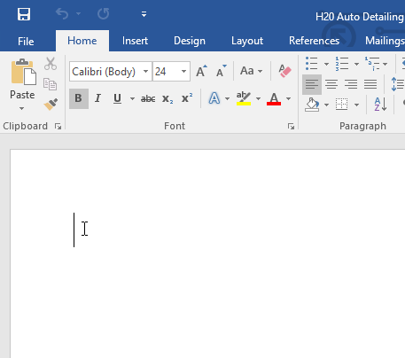

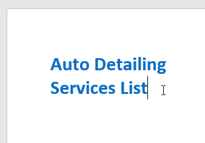
Înainte de a putea muta sau formata textul, va trebui să îl selectați. Pentru a face acest lucru, faceți clic și trageți mouse-ul peste text, apoi eliberați mouse-ul. O casetă evidențiată va apărea peste textul selectat.
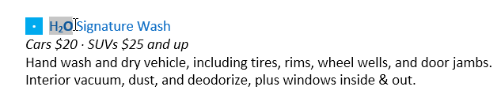
Când selectați text sau imagini în Word, va apărea o bară de instrumente cu mouse-ul cu comenzi rapide. Dacă bara de instrumente nu apare la început, încercați să treceți cu mouse-ul peste selecție.
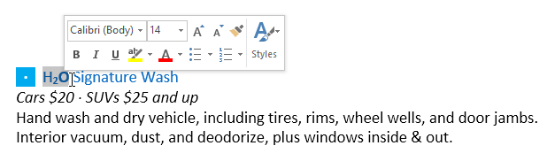
Pentru a selecta mai multe rânduri de text:- Mutați indicatorul mouse-ului la stânga oricărei linii, astfel încât să devină o săgeată înclinată spre dreapta .
- Faceți clic cu mouse-ul. Linia va fi selectată.
- Pentru a selecta mai multe linii, faceți clic și trageți mouse-ul în sus sau în jos.
- Pentru a selecta tot textul din document, alegeți comanda Selectare din fila Acasă, apoi faceți clic pe Selectați tot. De asemenea, puteți apăsa Ctrl+A pe tastatură.
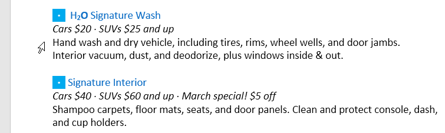
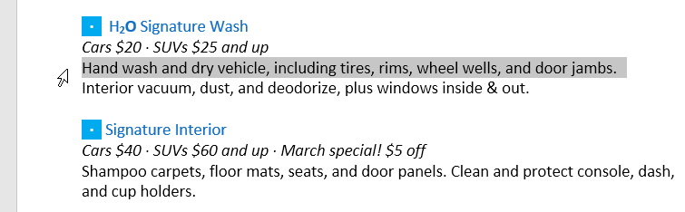
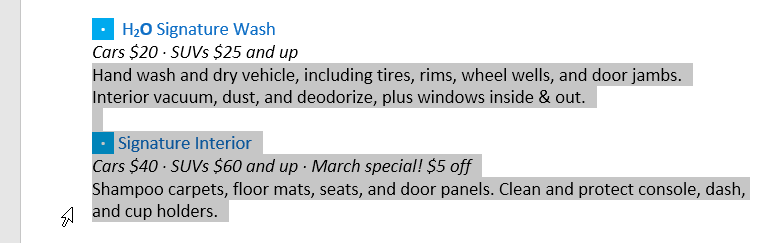
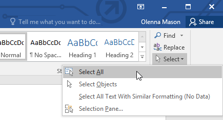
Există mai multe modalități de a șterge sau elimina text:
- Pentru a șterge textul din stânga punctului de inserare, apăsați tasta Backspace de pe tastatură.
- Pentru a șterge textul din dreapta punctului de inserare, apăsați tasta Ștergere de pe tastatură.
- Selectați textul pe care doriți să-l eliminați, apoi apăsați tasta Ștergere.
- Dacă selectați text și începeți să tastați, textul selectat va fi automat șters și înlocuit cu noul text.
Word vă permite să copiați textul care se află deja în documentul dumneavoastră și să-l lipiți în alte locuri, ceea ce vă poate economisi mult timp și efort. Dacă doriți să mutați text în document, puteți să tăiați și să lipiți sau să trageți și să plasați.
Pentru a copia și lipi text:- Selectați textul pe care doriți să îl copiați.
- Faceți clic pe comanda Copiere din fila Acasă. De asemenea, puteți apăsa Ctrl+C pe tastatură.
- Plasați punctul de inserare acolo unde doriți să apară textul.
- Faceți clic pe comanda Lipire din fila Acasă. De asemenea, puteți apăsa Ctrl+V de pe tastatură.
- Textul va apărea.
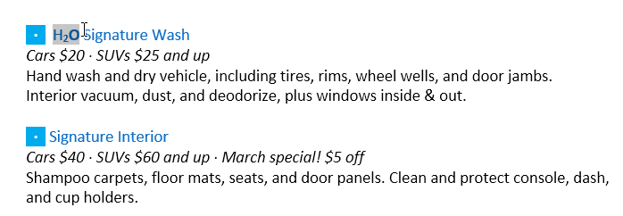
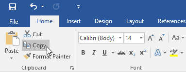
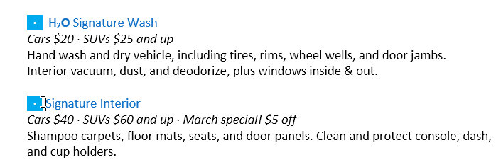
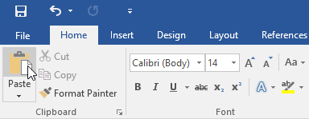
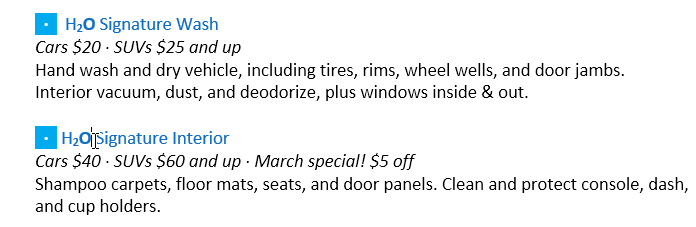
- Selectați textul pe care doriți să îl tăiați.
- Faceți clic pe comanda Cut din fila Acasă. De asemenea, puteți apăsa Ctrl+X pe tastatură.
- Plasați punctul de inserare acolo unde doriți să apară textul.
- Faceți clic pe comanda Lipire din fila Acasă. De asemenea, puteți apăsa Ctrl+V de pe tastatură.
- Textul va apărea.
.png)
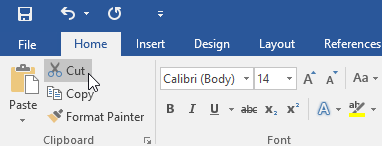
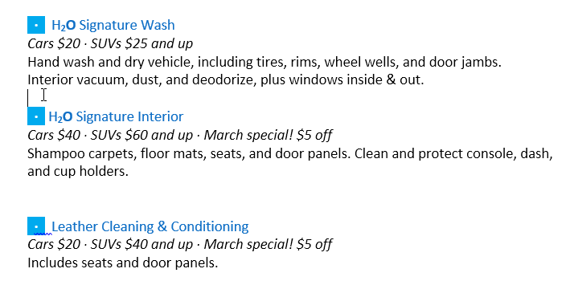
.png)
- Selectați textul pe care doriți să îl mutați.
- Faceți clic și trageți textul în locația în care doriți să apară. Un mic dreptunghi va apărea sub săgeată pentru a indica faptul că mutați text.
- Eliberați mouse-ul și va apărea textul.
- Dacă textul nu apare exact în locația dorită, puteți apăsa tasta Enter de pe tastatură pentru a muta textul pe o nouă linie.
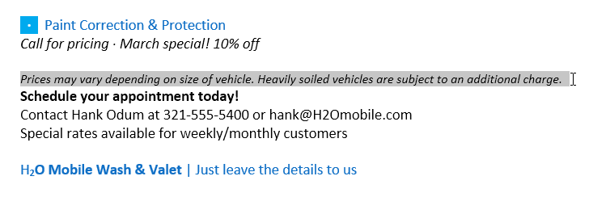

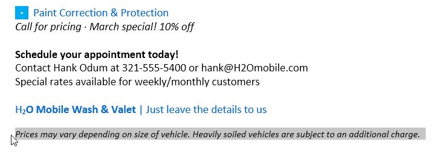
Să presupunem că lucrați la un document și ștergeți accidental un text. Din fericire, nu va trebui să tastați din nou tot ce tocmai ați șters! Word vă permite să anulați cea mai recentă acțiune când faceți o astfel de greșeală.
Pentru a face acest lucru, localizați și selectați comanda Anulare din bara de instrumente Acces rapid. De asemenea, puteți apăsa Ctrl+Z pe tastatură. Puteți continua să utilizați această comandă pentru a anula mai multe modificări la rând.
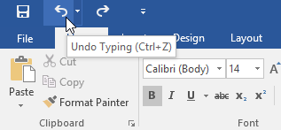
În schimb, comanda Redo vă permite să inversați ultima anulare. De asemenea, puteți accesa această comandă apăsând Ctrl+Y de pe tastatură.
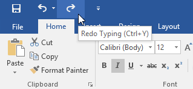
SimboluriDacă trebuie să inserați un caracter neobișnuit care nu se află pe tastatură, cum ar fi simbolul dreptului de autor (©) sau al unei mărci comerciale (™), îl puteți găsi de obicei cu comanda Simbol.
Pentru a introduce un simbol:- Plasați punctul de inserare acolo unde doriți să apară simbolul.
- Faceți clic pe fila Inserare.
- Localizați și selectați comanda Simbol, apoi alegeți simbolul dorit din meniul derulant. Dacă nu îl vedeți pe cel dorit, selectați Mai multe simboluri...
- Simbolul va apărea în document.
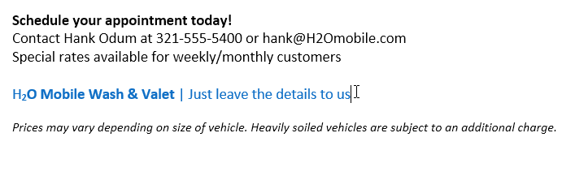
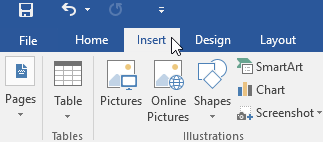
.png)
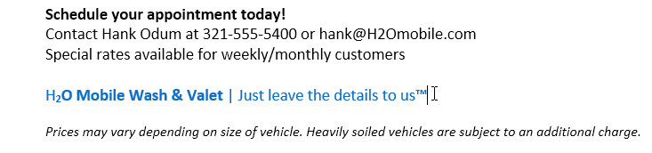